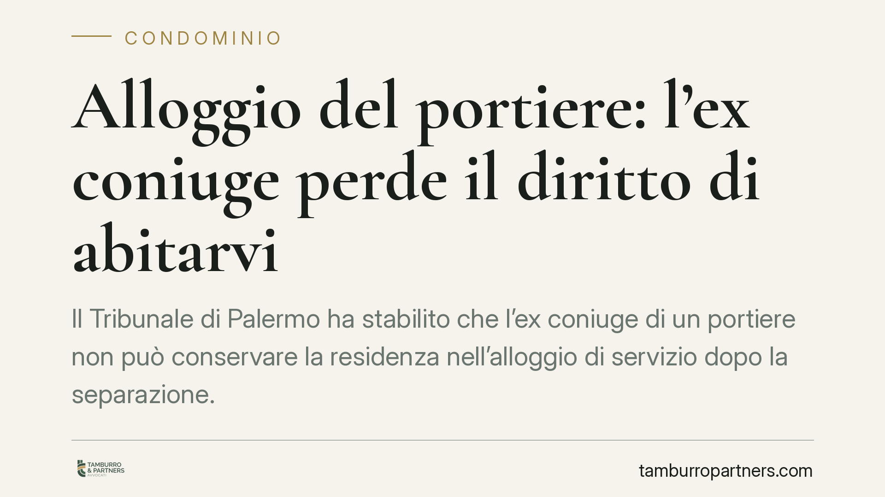

Alloggio del portiere: l'ex coniuge perde il diritto di abitarvi
Il Tribunale di Palermo ha stabilito che l'ex coniuge di un portiere non può conservare la residenza nell'alloggio di servizio dopo la separazione. Quel bene è connesso al contratto di lavoro con il condominio, non alla vita familiare: cessato il presupposto, viene meno anche l'utilizzo. Una pronuncia con effetti concreti per condomìni, portieri e loro familiari.

Il caso
Un portiere occupava, insieme alla famiglia, l'alloggio di servizio messo a disposizione dal condominio. Dopo la separazione, l'ex coniuge intendeva restare nell'immobile, invocando l'assegnazione della casa familiare tipicamente prevista in sede di separazione.
Il Tribunale di Palermo ha respinto questa impostazione. L'alloggio del portiere non è una casa familiare in senso proprio: è un bene condominiale concesso in ragione del rapporto di lavoro. Chi vi abita lo fa perché legato, direttamente o di riflesso, a quel rapporto. Venuto meno il legame familiare con il portiere, l'ex coniuge non ha più titolo per occuparlo.
Inquadramento normativo
Il punto di equilibrio sta nella natura del diritto di abitazione sull'alloggio.
L'art. 337-sexies del Codice civile disciplina l'assegnazione della casa familiare, prevista nell'interesse dei figli e in considerazione delle esigenze abitative del nucleo. Presuppone però che l'immobile sia effettivamente la casa familiare: uno spazio destinato alla vita domestica, sul quale la famiglia vantava un titolo autonomo (proprietà, comodato, locazione a nome di uno dei coniugi).
L'alloggio del portiere ha una funzione diversa. È un bene del condominio destinato a chi svolge il servizio di portierato. Il portiere lo utilizza in virtù del contratto di lavoro; il godimento è, in termini tecnici, "accessorio" alla prestazione lavorativa. Non nasce da un diritto della famiglia sull'immobile, ma dal rapporto tra portiere e condominio.
Da qui la conclusione del Tribunale: mancando un titolo abitativo autonomo del nucleo familiare, non può operare il meccanismo di assegnazione dell'art. 337-sexies. L'ex coniuge non può opporre al condominio un diritto che, alla radice, non esisteva.
Implicazioni pratiche
Per il condominio la pronuncia conferma un principio utile: l'alloggio resta strumento del servizio di portierato e non può essere "immobilizzato" da vicende familiari estranee al rapporto di lavoro. Se il portiere cessa dal servizio, o se muta la situazione familiare, il condominio conserva il controllo sull'utilizzo del bene.
Per il portiere il rilievo è delicato. La disponibilità dell'alloggio è legata alla continuità del rapporto di lavoro: al termine di quest'ultimo, cessa anche il diritto di occupare l'immobile, salvo diverse previsioni contrattuali o accordi con il condominio.
Per l'ex coniuge il messaggio è netto: non tutti gli immobili in cui si è vissuto durante il matrimonio sono "casa familiare" ai fini dell'assegnazione. Quando l'abitazione dipende da un rapporto di lavoro di uno solo dei coniugi, il diritto a restarvi non sopravvive alla crisi coniugale.
Restano da valutare, caso per caso, le esigenze dei figli minori: la loro tutela non fa nascere un titolo sull'alloggio del portiere, ma può incidere su altre misure economiche e abitative da definire nella separazione.
Cosa fare in concreto
- Verificate il titolo dell'immobile prima di invocare l'assegnazione della casa familiare: accertate se l'abitazione derivi da un diritto autonomo del nucleo o da un rapporto di lavoro.
- Condomìni: mettete per iscritto la destinazione dell'alloggio nel contratto con il portiere, chiarendo che il godimento è accessorio alla prestazione e cessa con essa.
- Portieri: leggete con attenzione le clausole sull'alloggio e le condizioni di rilascio in caso di cessazione del rapporto o di mutamento della situazione familiare.
- Ex coniugi: non date per scontato il diritto di rimanere; valutate soluzioni alternative e le misure a tutela dei figli in sede di separazione.
- Consigliamo di richiedere una consulenza mirata quando si intreccino diritto condominiale, di lavoro e di famiglia: sono ambiti che seguono regole diverse e vanno coordinati.
---
*Contributo informativo a cura di Tamburro & Partners - Avv. Giuseppe Tamburro. Non costituisce parere legale.*
Ogni condominio ha una storia a sé.
Se gestisci un'amministrazione e vuoi un confronto su una specifica questione condominiale, scrivi allo studio. Ti rispondiamo entro un giorno lavorativo.